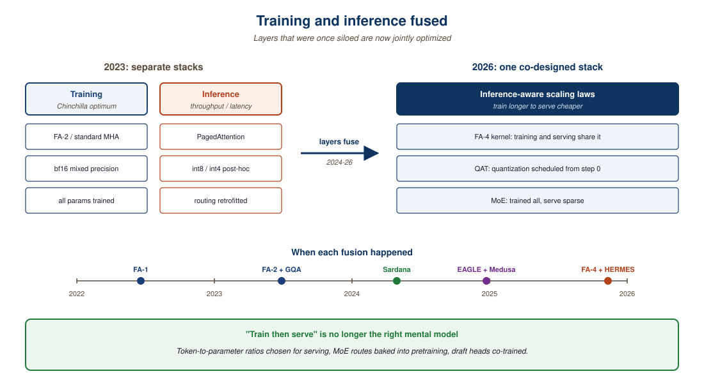

"Training and inference used to be separate departments. In 2026 they share a Slack channel and an architectural budget."
Sched, Co-Design-Native AI Agent
- Explain why inference-aware scaling shifts the optimum toward smaller models trained on more tokens.
- Walk through the training-versus-inference asymmetry that makes MoE economically attractive.
- Compare speculative decoding (Medusa, EAGLE), inference-aware scaling, and multi-stage pipelines as co-design strategies.
- Match a product workload (volume, latency target, capability tier) to its best co-design pattern.
The first decade of LLM engineering treated training and inference as separate concerns. By 2026 the seam has dissolved: every training decision is also an inference decision, and the silicon, kernels, and algorithms covered in this chapter all encode that fact. Co-design is not an optimization layered on top; it is the operating frame for frontier systems work.
Prerequisites
This section assumes the LLM pretraining objective from Section 6.2 and the inference-stack mechanics from Section 9.1. The distributed-training patterns are introduced in the next chapter of this part.
The cleanest summary of this chapter, and arguably of Part XII as a whole, is that the apparent dichotomy between "training compute" and "inference compute" was a historical artifact of when the field had so little of both that they had to be optimized separately. By 2026, with frontier models served to billions of users daily, the total cost-of-ownership question is dominated by amortized-inference cost; Sardana 2024 inference-aware scaling laws and Medusa/EAGLE speculative co-training are the technical expression of that economic reality. The engineering that wins in 2026-27 is the engineering that stops drawing a boundary between training and inference and starts treating them as one loop.
The first decade of large-language-model engineering treated training and inference as separate concerns. Training was a one-time event you optimized for FLOPs efficiency; inference was a continuous workload you optimized for latency and throughput. By 2026 that separation has broken down. Sardana et al. (2024) showed that the classical Chinchilla "compute-optimal" scaling laws systematically under-train the model relative to where the inference-aware optimum sits: if you serve a model billions of times, it is worth spending more training compute to save inference compute later. This insight has filtered into every frontier-model decision since 2024.
This section closes Chapter 58 with the systems-level co-design questions this implies: how training and inference share hardware, how MoE routing affects both sides, how the speculative-decoding / draft-model pattern blurs the boundary, and where 2027 will arbitrate.

58.5.1 Inference-aware scaling laws
Speculative decoding works because most tokens are easy and a tiny draft model can guess them while a big model verifies in parallel. The trick was first published in 2022 as a curiosity and is now the default in vLLM, TGI, and SGLang, which together serve roughly half of all open-weight LLM inference on the internet. Few research ideas have traveled that fast.
The Sardana et al. paper extends Chinchilla's compute-optimal frontier to account for amortized inference cost. The result is intuitive: if your model will be served for a long time at high volume, the optimal balance shifts toward "smaller model trained longer". For frontier closed-API models served to hundreds of millions of users, the inference-aware optimum is very different from the training-only optimum. The Sardana framework explains why we see the trend toward "dense models trained on aggressive token-to-parameter ratios" (Llama-4 8B on 30T+ tokens; SmolLM2 360M on FineWeb-Edu; Liquid LFM2.5-350M on 28T tokens, 80,000:1 ratio).
58.5.2 MoE: where co-design pays off the most
Mixture-of-experts models break the symmetry between training and inference. During training, all experts must be loaded and gradient-updated; during inference, only the active subset is touched per token. The economic story is therefore: pay for big training (all experts in memory), get cheap inference (sparse activation). DeepSeek V4 (671B parameters, ~37B active per token) and Qwen3-235B-A22B (128 experts, top-8 routing) are the 2026 reference points. The Friendli MoE comparison walks through the routing schemes.
# MoE top-k routing in PyTorch (the inference-time path).
# Demonstrates why only k expert FLOPs are paid per token even though
# N expert parameter sets live in memory during training.
import torch
import torch.nn.functional as F
batch, d_model, n_experts, k = 4, 32, 8, 2
x = torch.randn(batch, d_model)
gate = torch.nn.Linear(d_model, n_experts, bias=False)
experts = torch.nn.ModuleList(
[torch.nn.Linear(d_model, d_model) for _ in range(n_experts)]
)
# 1) Router scores per token, top-k selection, renormalized weights.
scores = gate(x) # (batch, n_experts)
topk_w, topk_idx = scores.topk(k, dim=-1) # (batch, k)
topk_w = F.softmax(topk_w, dim=-1) # weights sum to 1 over the k
# 2) Dispatch each token to its selected experts and combine the outputs.
y = torch.zeros_like(x)
for j in range(k):
for b in range(batch):
e = topk_idx[b, j].item()
y[b] += topk_w[b, j] * experts[e](x[b])
print("active experts per token :", topk_idx.tolist())
print("active FLOPs / total FLOPs:", f"{k}/{n_experts} = {k/n_experts:.2f}")
Code Fragment 58.5.1a: A minimal top-k MoE router and expert combination in PyTorch. Production implementations (Switch, Mixtral, DeepSeek-MoE) vectorize the dispatch through scatter / gather and add load-balancing losses, but the inference cost identity per-token FLOPs proportional to k, not to N is exactly the one above.
An H100 rents for about $3 to $5 per hour in 2026, which is roughly the hourly rate of a senior staff engineer in many markets. The asymmetric part is that the H100 works 24/7 with no PTO and never asks for an offsite, but it also cannot debug its own OOM at 3 a.m. and produces nothing useful unless someone parameterized the YAML correctly. The teams that win at co-design are the ones that internalize this: every spec sheet number, every batching decision, every quantization choice maps to either a salary or a salary-equivalent burn rate, and "let it run another day to be safe" can cost as much as a sprint.
DeepSeek V4 advertises 671B total parameters and ~37B active per token. With 256 experts and top-8 routing, each token touches 8 / 256 = 3.1% of the expert parameter budget. The memory required at inference is roughly 671B·2 bytes ≈ 1.34 TB for the weights (FP16), so a single H200 node with 8×141 GB = 1.13 TB cannot fit the model without 4-bit quantization (which drops the weights to ~336 GB, fits comfortably). The compute per token, however, scales with the active 37B: at 2 FLOPs per parameter per token, that is ~74 GFLOPs per generated token, about 18× cheaper than a dense 671B model would cost. This is why MoE wins at high-throughput inference but loses on memory-constrained edge: the bottleneck switches from FLOPs to bytes-of-weights resident.
58.5.3 Speculative decoding and draft-model patterns
Speculative decoding (Leviathan et al., 2023; popularised in 2024-25 production) runs a small "draft" model that proposes several tokens at once, then verifies them with the target model in parallel. Practical 2-4x throughput gains at no quality cost. The pattern reaches its logical conclusion in Medusa and EAGLE, which co-train target and draft heads. The training cost is small; the inference savings are large. This is co-design done right.
58.5.4 Multi-stage inference pipelines
MIT HERMES (2025) formalises the multi-stage AI inference pipeline that 2026 production systems actually use: prefill on one fabric (often Blackwell GPU), token generation on another (often Groq LPU or Cerebras CS-3), retrieval and tool-use on a third (CPU + accelerators), and any vision / multimodal preprocessing on a fourth (specialized vision-encoder NPUs). HERMES's contribution is a scheduler that places each stage on its best-fit silicon and minimizes inter-stage copy cost.
58.5.5 Comparing co-design strategies
| Pattern | Training cost | Inference benefit | Best example |
|---|---|---|---|
| Inference-aware scaling | Higher (more tokens) | Smaller, faster inference | SmolLM2, Liquid LFM2.5 |
| Mixture-of-experts | High (all experts trained) | Active-fraction-only inference | DeepSeek V4, Qwen3-235B |
| Speculative decoding | Small draft head training | 2-4x throughput | Medusa, EAGLE |
| Quantization-aware training | Higher (longer schedule) | 4-bit / 1.58-bit inference | BitNet b1.58 2B4T |
| Multi-stage pipeline | None (placement-only) | Right silicon per stage | HERMES scheduler |
Through 2022-23 the framing was that scaling pretraining FLOPs would hit a wall (model size, available tokens, frontier dataset quality). By 2026 the wall is on the inference side: how cheaply and quickly can a trillion-parameter model serve a billion requests per day. The Cerebras / Groq / BitNet / FlashAttention-4 cluster of work is one connected response to that question. The Sardana paper's "inference-optimal scaling" is the algorithmic counterpart. Treat "frontier" in 2026-27 as a story about inference economics as much as about model capability.
You are designing a customer-support agent for a 100,000-call-per-day product. The naive choice is "the best chat model your budget allows". The co-design choice is: a 7B fine-tune that fits in vLLM with FA-4 on a single H100 at $0.30 per million tokens, with a 70B model held in reserve for the 5% of conversations that escalate. Total cost is one tenth of the naive choice and quality on simple cases is indistinguishable. This pattern, "small fast default, big careful fallback", is the operational expression of co-design and is the right starting architecture for most 2026 products. Anthropic's Computer Use cascade (Haiku for the click-loop, Sonnet for screen reasoning, Opus 4.6 only when escalated) is the same pattern operationalized at API scale.
Inference-aware scaling assumes high inference volume; if you only serve a model a few hundred times, the math reverses. MoE routing benefits high-batch serving; at batch-1 the routing overhead eats the savings. Speculative decoding assumes a good draft model is available; if your task is so narrow that draft and target disagree often, the speculation accept-rate collapses and so do the savings. Profile before adopting; do not cargo-cult the patterns.
The unresolved co-design question of 2027 is the one this chapter has been building toward: can frontier-model training and serving be decoupled enough that decentralized training (Section 58.2) feeds centralized inference (Section 58.1), or do they remain co-located by economics? The answer determines whether the next decade of LLM infrastructure looks like cloud computing (centralized) or like the modern internet (distributed). Chapter 64 picks up the broader trajectory question: where on the 2027-2033 spectrum does AGI actually land, and what does the labor market look like along the way.
- Inference-aware scaling shifts the optimum toward smaller models on more tokens (SmolLM2, Liquid LFM2.5, Llama-4 8B).
- MoE pays training cost (all experts) for inference savings (sparse activation): DeepSeek V4, Qwen3-235B.
- Speculative decoding with co-trained draft heads (Medusa, EAGLE) gives 2-4x throughput at no quality cost.
- The right co-design pattern is workload-specific; profile before adopting any of them.
Show Answer
Show Answer
What's Next?
In the next chapter, Chapter 59: Distributed Training Fundamentals, we continue building on the material from this chapter.